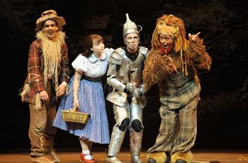
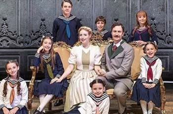
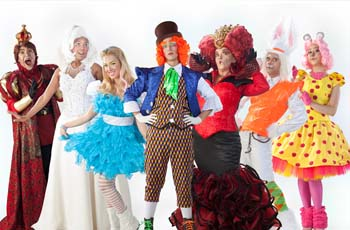

O Mágico de Oz
Teatro Miguel Falabela
Sexta e Sábado às 19:00
[Rio de Janeiro]

A Noviça Rebelde
Teatro João Caetano
Sexta e Sábado às 21:00
[Rio de Janeiro]
Minha Mãe é uma Peça
Teatro Shopping Frei Caneca
Sábado e Domingo às 21:30
[São Paulo]

Alice no País das Maravilhas
Teatro Marilia
Sexta e Sábado às 17:30
[Minas Gerais]
O Mágico de Oz
Teatro Dom Silvério
Sexta e Sábado às 18:30
[Minas Gerais]
Castelo Rá-Tin-Bum
Teatro NET Rio
Sexta e Sábado às 19:00
[Minas Gerais]